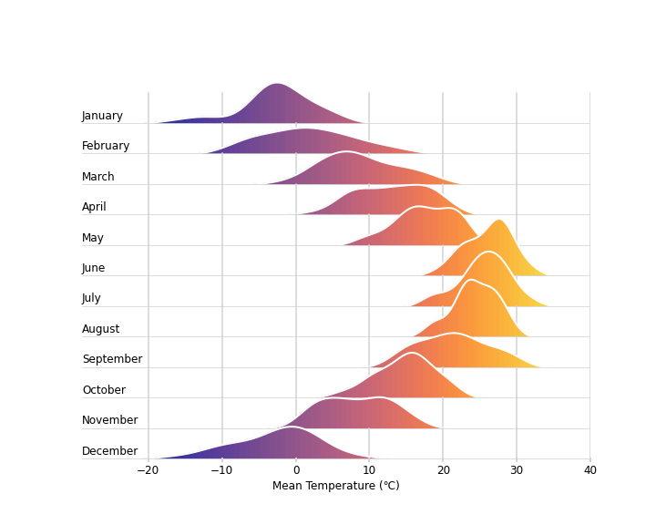
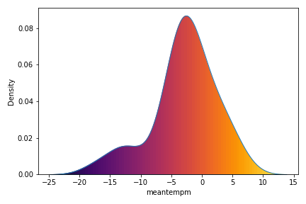
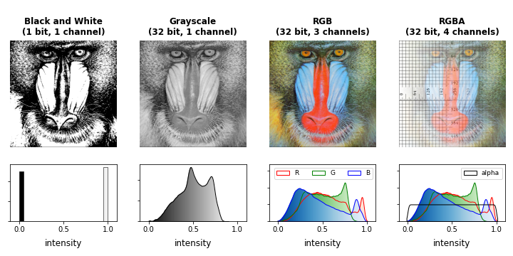

- 시각화는 데이터를 그림으로 표현하는 작업입니다.
- 그런데 한번 그림이 되면 진짜 그림처럼 취급할 수 있습니다.
- 밀도함수에 컬러맵을 입혀봅시다.
1. Imitating Ridge Plot by R
- 인터넷을 다니다가 R로 그려진 멋진 그림을 봤습니다.
- 밀도함수에 컬러맵을 입힌 그림이 멋져서 따라해보고 싶더군요.
- 저는 R을 사용하지 못하는 파이썬 사용자입니다만 비슷한 그림을 만들었습니다.

- 코드를 먼저 공개하고 어떻게 한건지 설명하겠습니다.
1
2
3
4
5
6
7
8
9
10
11
12
13
14
15
16
17
18
19
20
21
22
23
24
25
26
27
28
29
30
31
32
33
34
35
36
37
38
39
40
41
42
43
44
45
46
47
48
49
50
51
52
53
54
55
56
57
58
59
60
61
62
63
64
65import pandas as pd
import numpy as np
import matplotlib.pyplot as plt
import matplotlib as mpl
import seaborn as sns
# 네브라스카주 링컨시 데이터 다운: https://github.com/amcquistan/WeatherPredictPythonML
df_weather = pd.read_csv("end-part2_df.csv", index_col="date")
# 2016년 데이터만 선택
df_2016 = df_weather.filter(like="2016", axis=0)
# 날짜에서 월 추출
df_2016.reset_index(inplace=True)
df_2016["month"] = df_2016["date"].apply(lambda s: int(s.split("-")[1]))
### 시각화
import calendar
import cmocean as cmo
fig, axs = plt.subplots(nrows=12, figsize=(10,5), sharex=True, sharey=True)
fig.set_facecolor("none")
x = np.linspace(0, 1, 100)
for i, ax in enumerate(axs, 1):
sns.kdeplot(df_2016.query(f"month=={i}")["meantempm"],
fill=True, color="w", alpha=0, linewidth=2, legend=False, ax=ax)
ax.set_xlim(-29, 40)
# >>> 밀도함수에 gradient 추가
im = ax.imshow(np.vstack([x, x]),
cmap="cmo.thermal",
aspect="auto",
extent=[*ax.get_xlim(), *ax.get_ylim()]
)
path = ax.collections[0].get_paths()[0]
patch = mpl.patches.PathPatch(path, transform=ax.transData)
im.set_clip_path(patch)
# <<< 밀도함수에 gradient 추가
ax.text(-29, 0.01, calendar.month_name[i], fontdict={"fontsize":"large"})
ax.spines["left"].set_visible(False)
ax.spines["right"].set_visible(False)
ax.spines["top"].set_visible(False)
ax.spines["bottom"].set_visible(False)
if i != 12:
ax.tick_params(axis="x", length=0)
else:
ax.tick_params(axis="x", direction="inout", color="lightgray",
length=5, width=2, labelsize="large")
ax.set_xlabel("Mean Temperature (℃)", fontdict={"fontsize":"large"})
ax.set_yticks([])
ax.set_ylabel("")
xticks = ax.get_xticks()
for xtick in xticks:
ax.plot([xtick, xtick], [0, 0.065], color='lightgray', zorder=0)
ax.axhline(0, color="lightgray")
ax.set_facecolor("none")
fig.subplots_adjust(hspace=-0.5)
2. Colormap on Density Plot
- 밀도함수에 컬러맵을 얹는 순서는 다음과 같습니다.
1. 밀도함수 그리기: seaborn.kdeplot()
2. 그림 전체에 컬러맵 칠하기: axes.imshow()
3. 밀도함수 영역 따기: matplotlib.collections.get_paths()
4. 컬러맵을 밀도함수 모양에 맞게 자르기: matplotlib.patches.PathPatch(), im.set_clip_path()
- 한 단계씩 살펴봅니다.
2.1. Sample Data
- 1월 데이터만 가지고 옵니다.
1
2df_jan = df_2016.query("month==1")
df_jan.head()
2.2. 밀도함수 그리기
- seaborn의 힘을 빌립니다.
seaborn.kdeplot()을 사용합니다.fill=True가 중요합니다: matplotlib collection 객체로 만들어야 합니다.alpha=0도 중요합니다: 컬러맵이 잘 표현되도록 배경색을 제거합니다.1
2
3fig, ax = plt.subplots()
sns.kdeplot(df_jan["meantempm"], fill=True, alpha=0, ax=ax)
2.3. 그림 전체에 컬러맵 칠하기
- x값을 100단계로 나누어서 이미지를 만듭니다.
- (2, 100) 형태의 array를 만들어서 그림 크기에 맞게 붙입니다.
1
2
3
4
5
6
7
8
9x = np.linspace(0, 1, 100)
im = ax.imshow(np.vstack([x, x]),
cmap="inferno",
aspect="auto",
extent=[*ax.get_xlim(), *ax.get_ylim()]
)
display(fig)
2.4. 밀도함수 영역 따기
- Matplotlib에는 collection이라는 개념이 있습니다.
- 여러 도형들을 한데 묶어 관리하는 것으로, 색상이나 선 굵기 등을 한번에 조정할 수 있습니다.
- 파워포인트의 그룹을 생각하시면 비슷할 듯 합니다.
우리 axes 위에는 방금 그린 밀도함수 뿐이므로,
ax.collections객체가 단 하나입니다.이 객체의 윤곽선을
get_path()명령으로 추출합니다.1
print(ax.collections[0].get_paths()[0])
실행 결과
1
2
3
4
5Path(array([[-2.48238595e+01, 5.51614084e-05],
[-2.48238595e+01, 0.00000000e+00],
[-2.46296499e+01, 0.00000000e+00],
[-2.44354402e+01, 0.00000000e+00],
(생략)get_path()의 결과로 두 가지 데이터가 나옵니다.첫번째는 path의 꼭지점들(vertices) 좌표이고, 두번째는 꼭지점들의 속성입니다.
자세한 사항은 Path Tutorial에서 볼 수 있습니다. 지금은 넘어갑니다.
꼭지점만 받아서 그림을 그려도 밀도함수의 윤곽선이 나옵니다.
1
2
3vertices = ax.collections[0].get_paths()[0].vertices.T
plt.plot(*vertices)
2.5. 컬러맵을 밀도함수 모양에 맞게 자르기
- Path로부터 patch를 형성하고,
- patch 모양에 따라 컬러맵 이미지를 오려냅니다.
1
2
3
4
5path = ax.collections[0].get_paths()[0]
patch = mpl.patches.PathPatch(path, transform=ax.transData)
im.set_clip_path(patch)
display(fig)
- 짜잔! 1월 기온 분포에 컬러맵을 칠한 효과가 나왔습니다.
3. 응용
- 이미지의 RGB 채널 분리에 응용합니다.
- RGB 각 채널을 그냥 빨갛게, 녹색으로, 파랗게 칠할 수도 있지만 intensity를 gradient로 표현했습니다.

- 코드는 이렇습니다.
1
2
3
4
5
6
7
8
9
10
11
12
13
14
15
16
17
18
19
20
21
22
23
24
25
26
27
28
29
30
31
32
33
34
35
36
37
38
39
40
41
42
43
44
45
46
47
48
49
50
51
52
53
54
55
56
57
58
59
60
61
62
63
64
65
66
67
68
69
70
71
72
73
74
75
76
77
78
79
80
81
82
83
84
85
86from matplotlib import colors
mandrill_rgb = plt.imread("USC_SIPI_Mandrill.tiff")/256
ruler = plt.imread("USC_SIPI_Ruler.512.tiff")/256
def rgb2gray(rgb):
return np.dot(rgb[...,:3], [0.2989, 0.5870, 0.1140])
mandrill_grayscale = rgb2gray(mandrill_rgb)
mandrill_bw = np.where(mandrill_grayscale >= 0.5, 1, 0)
# adding alpha channel
mandrill_a = np.zeros(mandrill_grayscale.shape)
for i in range(mandrill_a.shape[0]):
mandrill_a[:,i] = i/mandrill_a.shape[0]
mandrill_alpha = np.insert(mandrill_rgb, 3, mandrill_a, axis=2)
fig, axes = plt.subplots(ncols=4, nrows=2, figsize=(10, 5), gridspec_kw={"height_ratios":[3,1]})
for ax, img, title in zip(axes[0],
[mandrill_bw, mandrill_grayscale, mandrill_rgb, mandrill_alpha],
["Black and White\n(1 bit, 1 channel)", "Grayscale\n(32 bit, 1 channel)", "RGB\n(32 bit, 3 channels)", "RGBA\n(32 bit, 4 channels)"]):
if "RGB" in title:
ax.imshow(img)
else:
ax.imshow(img, cmap="gist_gray")
ax.set_title(title, fontweight="bold", pad=8)
ax.axis(False)
### histogram
# black and white
sns.histplot(mandrill_bw.ravel(), bins=20, ax=axes[1, 0])
for p in axes[1, 0].patches:
p.set_facecolor(str(p.get_x()))
# grayscale
sns.kdeplot(mandrill_grayscale.ravel(), bw_adjust=0.5, cut=0,
fill=True, color="k", alpha=0, ax=axes[1, 1])
x = np.linspace(0, 1, 100)
im = axes[1, 1].imshow(np.vstack([x, x]), cmap="gist_gray",
aspect="auto", extent=[*axes[1,1].get_xlim(), *axes[1,1].get_ylim()])
path = axes[1, 1].collections[0].get_paths()[0]
patch = mpl.patches.PathPatch(path, transform=axes[1, 1].transData)
im.set_clip_path(patch)
# RGB
sns.kdeplot(mandrill_rgb[:, :, 0].ravel(), bw_adjust=0.5, cut=1, fill=True, alpha=0, color="red", label="R", ax=axes[1, 2])
sns.kdeplot(mandrill_rgb[:, :, 1].ravel(), bw_adjust=0.5, cut=1, fill=True, alpha=0, color="green", label="G", ax=axes[1, 2])
sns.kdeplot(mandrill_rgb[:, :, 2].ravel(), bw_adjust=0.5, cut=1, fill=True, alpha=0, color="blue", label="B", ax=axes[1, 2])
for i, color in enumerate(["red", "green", "blue"]):
im = axes[1, 2].imshow(np.vstack([x, x]), cmap=f"{color.capitalize()}s_r",
aspect="auto", extent=[*axes[1, 2].get_xlim(), *axes[1, 2].get_ylim()])
path = axes[1, 2].collections[i].get_paths()[0]
patch = mpl.patches.PathPatch(path, transform=axes[1, 2].transData)
im.set_clip_path(patch)
axes[1, 2].set_ylim(top=axes[1, 2].get_ylim()[1] * 1.4)
axes[1, 2].legend(ncol=3, fontsize=9)
# alpha
axes[0, -1].imshow(ruler, zorder=-1, cmap="gist_gray")
sns.kdeplot(mandrill_alpha[:, :, 0].ravel(), bw_adjust=0.5, cut=1, fill=True, alpha=0, color="red", label="R", ax=axes[1, 3])
sns.kdeplot(mandrill_alpha[:, :, 1].ravel(), bw_adjust=0.5, cut=1, fill=True, alpha=0, color="green", label="G", ax=axes[1, 3])
sns.kdeplot(mandrill_alpha[:, :, 2].ravel(), bw_adjust=0.5, cut=1, fill=True, alpha=0, color="blue", label="B", ax=axes[1, 3])
sns.kdeplot(mandrill_alpha[:, :, 3].ravel(), bw_adjust=0.5, cut=1, fill=True, alpha=0, color="k", label="alpha", ax=axes[1, 3])
for i, color in enumerate(["red", "green", "blue"]):
im = axes[1, 3].imshow(np.vstack([x, x]), cmap=f"{color.capitalize()}s_r",
aspect="auto", extent=[*axes[1, 3].get_xlim(), *axes[1, 3].get_ylim()])
path = axes[1, 3].collections[i].get_paths()[0]
patch = mpl.patches.PathPatch(path, transform=axes[1, 3].transData)
im.set_clip_path(patch)
axes[1, 3].set_ylim(top=axes[1, 3].get_ylim()[1] * 1.4)
handles, labels = axes[1, 3].get_legend_handles_labels()
axes[1, 3].legend(handles=handles[-1:], labels=labels[-1:], fontsize=9)
for ax in axes[1]:
ax.set_xlim(-0.1, 1.1)
ax.set_yticklabels([])
ax.set_xlabel('intensity', fontsize=12, labelpad=8)
ax.set_ylabel('')
fig.tight_layout()